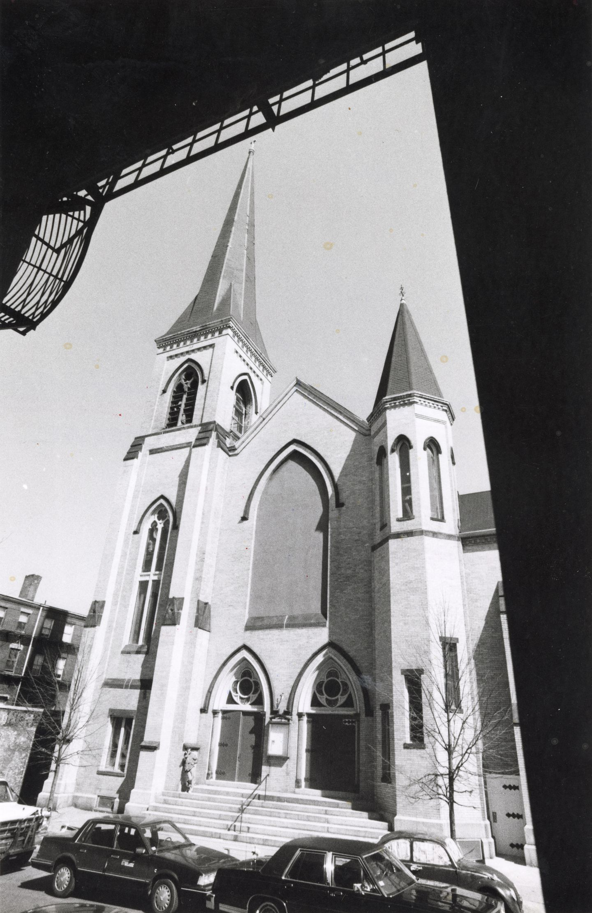
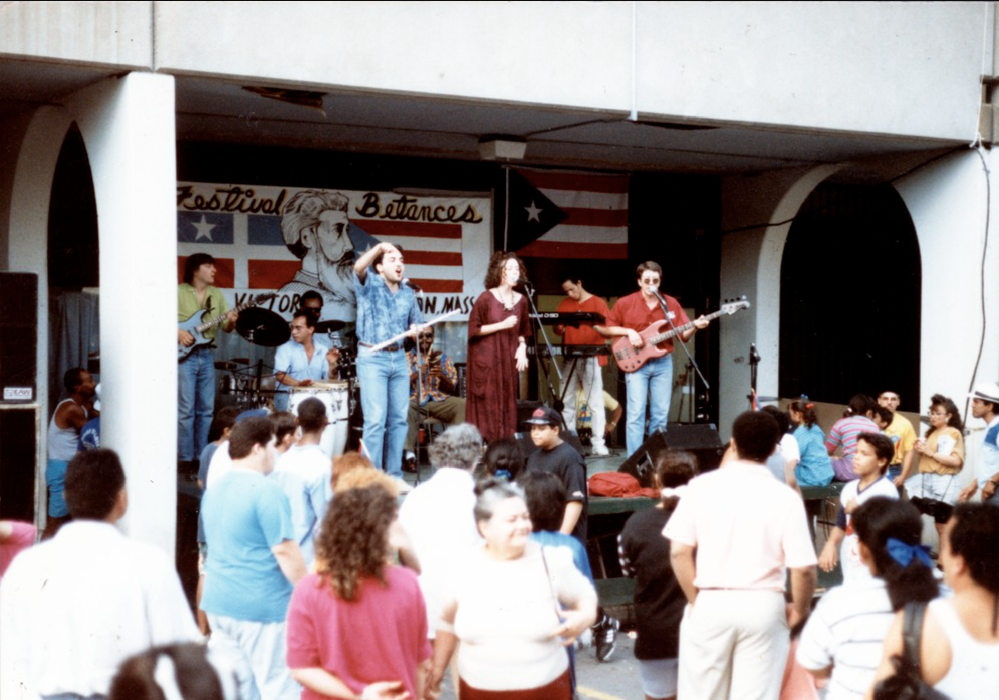

The destruction of the working-class community landmark Jorge Hernandez Cultural Center, Villa Victoria Center for the Arts in the South End
By: Sofía Pérez Arias
In the 1950 and 60s the city of Boston and the Boston Redevelopment Authority decided that the South End was "blighted".
Urban Renewal aimed at demolishing homes where many Puerto Rican tenants lived. However, these tenants organized themselves and fought back. The Puerto Rican Tenants in Action were later given the rights to develop on the parcel which is now known as Villa Victoria.
From this struggle, the housing development of Villa Victoria was formed, which provides low and moderate income housing to many families. Alongside these homes, the Jorge Hernandez Cultural Center was establishes to provide for the needs of the community.
In December 2020, the Jorge Hernández Cultural Center was demolished.
Around the same time, the Harriet Tubman House, another community space just a few blocks away was also demolished.
Even though Villa Victoria has protections due to the rights tenants fought for in 1968; the need for further redevelopment and the demolition of the original Jorge Hernandez Cultural Center church is only a seed of the impacts of gentrification in Boston.
In December 2020, Villa Victoria Center for the Arts, formerly known as Jorge Hernández Cultural Center, was demolished. Located on 85 West Newton St in the South End, it was originally built as All Saints Lutheran Church and later made into a community space for programming, performances, dances, conferences, concerts and a landmark for Baricua culture and programming. The space has been a hub for the non-profit Inquilinos Boricuas en Acción (the Puerto Rican Tenants in Action and Emergency Tenants Coalition or IBA) since 1986.The center stemmed from the radical history of Boricua tenant organizing during Boston’s urban renewal.

Jorge Hernández Cultural Center, originally built as All Saints Lutheran Church.
The demolition of the church was difficult for many with deep memories and experiences in the building. The destruction and displacement of the arts center are symbolic of the fate of the Latino community in the South End.
According to Vanessa Calderón-Rosado, chief executive of IBA, the renovation to maintain the structure of the original building would have cost $24 million, and new renovation would add $11 million. At the same time, the City of Boston and the Boston Planning and Development Agency spent millions destroying important landmarks and building new luxury condos in the same area, such as the demolition and sale of Harriet Tubman House to New Boston Ventures to develop market-rate housing on the site.
None of this is new to Boston. From the 1950s to 70s, Boston struggled against urban renewal. After the implementation of the Housing Act of 1949, cities were tasked with clearing out “blighted areas”, starting redevelopment plans, and promoting “slum clearance.” Loans were provided to developers to build new buildings. Neighborhoods closest to downtown Boston were targeted first. This included the so-called New York Streets in the South End.
Jared Katsiane’s family was displaced from their home in the South End.
By the 1960s the South End became the focus for redevelopment in Boston. However, Puerto Rican residents fought back against this: they met, organized and started the Emergency Tenant’s Council, which later became IBA. Since then, IBA owns the right to develop that area in Villa Victoria.
Eroc Arroyo is a Puerto Rican immigrant, a father, and a musician. Eroc’s parents lived in Villa Victoria when they first moved to Boston and he grew up going there as a child.
Arroyo holds these memories close to his heart and understands the struggle against urban renewal in the ‘60s and now gentrification continuing today.

Music at Festival Betances
Arnesse Brown is another long time South End resident, and speaks passionately of her memories from the neighborhood of Villa Victoria.
Hand-drawn sketch of the Villa Victoria housing development, No Nos Moverán, We Shall Not Be Moved.A program for the Festival Betances 1995. Hosted by Villa Victoria Center for the Arts, Festival Betances celebrates Latino art and culture.
Myriam Mortiz, a Boricuan immigrant, holds many powerful memories from the Center, including seeing former political prisoner Oscar Lopez Rivera at Villa Victoria.
The new building is set to open in 2025, but the struggle against ongoing gentrification continues. Without resistance, the same profit motive that destroyed the Center, whose inspiring architecture will no longer grace the area of Villa Victoria, will continue across the historically Black and Latinx neighborhoods across Boston. The rich history of struggle of Villa Victoria stands as a legacy of all those that came before us handed on to those that stand today defending the right to their land. These stories cannot be forgotten.